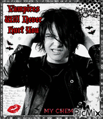
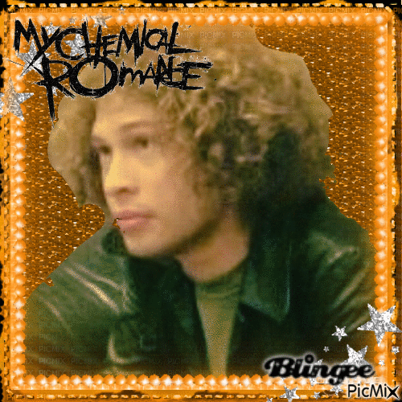

My Chemical Romance ha sido popular entre jovenes y no tan jovenes desde los 2000's, en donde la moda y la cultura emo habia ganado popularidad al igual que la banda.
Claro que un elemento fundamental del cual sostiene la banda, son los amados y apreciados integrantes de esta, de los cuales cada fan tiene un favorito. ¿Quieres conocerlos?
Vocalista y compositor de la banda, que con tan solo 24 años se animo a crear y lanzar un proyecto que queria que revolucionara su vida, logrando su proposito y sacudiendo el corazon de miles de personas mas. Un amor de persona descrito por muchos, un rarito, pero guapo por otros. Definitivamente una belleza tetrica que no muchos podrian apreciar, pero que muchos estarian de acuerdo que tiene una mente de un genio; creativo e innovador. Un encanto de hombre. <3
Creador del mundo de "The Umbrella Academy", animador, ilustrador y artista fuera de la banda, contando con una carrera en solitario con un album llamado "Hesitant Alien" con canciones sobresalientes como "Brother", "Maya the Psychic" y "Action Cat". El alma de un artista en todo su esplendor. ♡

⊹ ࣪ ˖ MIKEY WAY ₍^ >ヮ<^₎ .ᐟ.ᐟ ♡♡
Bajista de la banda y hermano de Gerard. Un elemento, que aunque le parezca irrelevante a la gente inepta, le añade el sazon a su musica, con su bajo añadiendole armonia a las canciones y sus visuales a la banda. ♡
Personalmente, es uno de mis favoritos, ESTA BIEN GUAPOOOOOOOOOO.
⊹ ࣪ ˖ FRANK IERO (˶ˆᗜˆ˵).ᐟ.ᐟ ♡♡
Guitarrista y corista de la banda – Para Frank Iero, hacer musica siempre ha sido una forma de sobrellevar las dificultades. Pero tambien es mucho mas que una forma de lidiar con las dificultades de la vida: es una forma de tomar distancia y absorber el huracan que es la vida, tanto en toda su gloria como en su devastacion, y reconocer las cosas que uno podria, y quizas deberia, haber hecho de otra manera.
Un chico guapo y punketo con ojitos de cachorro. Esa seria mi forma de describirlo- LO AMO.
⊹ ࣪ ˖ RAY TORO ପ(๑•ᴗ•๑)ଓ ♡
Guitarrista principal de la banda y corista. Toro ha citado al guitarrita de Queen, Brian May, como su principal influencia, e incluso se le han comparado en mas de una ocasion. Toro ha dicho que «aprecio [las comparaciones]. Es uno de mis guitarristas favoritos. Me encanta su trabajo. Ese tipo es capaz de todo. Viene con grandes armonias, y es un gran cantante. Para mi es un honor que alguien diga que toco como el o que las partes les recuerdan a Queen.»
